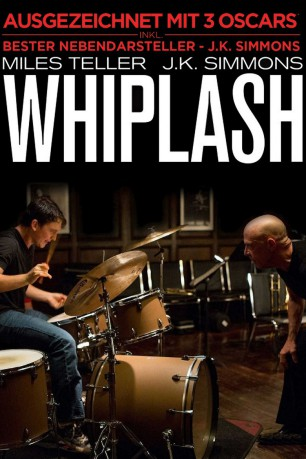

#350 Whiplash
Auszeichnungen: 3 Oscars gewonnen für 2 Oscars nominiert 1 GoldenGlobes gewonnen 3 BAFTA-Awards gewonnen
 gesehen am 01.07.2015
gesehen am 01.07.2015
 
 IMDB-Wertung: 8.5 / 10
IMDB-Wertung: 8.5 / 10  IMDB-TOP-Platzierung: 44
IMDB-TOP-Platzierung: 44  Metascore: 88
Metascore: 88 
Der 19-jährige Andrew Neiman (Miles Teller) ist ein begnadeter Schlagzeuger. In einer der renommiertesten Musikschulen des Landes wird er vom Dirigenten Terence Fletcher (J.K. Simmons) unter die Fittiche genommen. Der bekannte Bandleader fördert den jungen Drummer, aber er fordert ihn noch mehr: Mit rabiaten Unterrichtsmethoden, die immer mehr zu Gewaltexzessen ausarten, will er Andrew zu Höchstleistungen treiben und führt ihn an seine physischen und emotionalen Grenzen. Der Nachwuchsmusiker stellt sich der Tortur, denn es ist sein sehnlichster Wunsch, einer der größten Schlagzeuger der Welt zu werden. Während sein besorgter Vater Jim (Paul Reiser) immer mehr an den Methoden und den Absichten des Lehrers zweifelt, hält Andrew hartnäckig durch. Doch wieviel mehr kann der Teenager noch ertragen?
Jahr: 2014
Dauer: 107 Minuten
FSK: 12
Land: USA Studio: Sony Pictures ClassicsTonspuren: DTS - ,
Untertitel: Deutsch,
Auflösung: 1080p (1920x804) Größe: 9922 MB
Genre: Drama, Musik
Regisseur: Damien Chazelle
Drehbuch: Damien Chazelle
Soundtrack: Justin Hurwitz
Darsteller:
 Miles Teller als Andrew
Miles Teller als Andrew J.K. Simmons als Fletcher
J.K. Simmons als Fletcher Paul Reiser als Jim Neimann
Paul Reiser als Jim Neimann Melissa Benoist als Nicole
Melissa Benoist als Nicole Austin Stowell als Ryan
Austin Stowell als Ryan- Nate Lang als Carl Tanner
 Chris Mulkey als Uncle Frank
Chris Mulkey als Uncle Frank Damon Gupton als Mr. Kramer
Damon Gupton als Mr. Kramer- Suanne Spoke als Aunt Emma
 Max Kasch als Dorm Neighbor
Max Kasch als Dorm Neighbor- Charlie Ian als Dustin
- Jayson Blair als Travis
 Kofi Siriboe als Bassist, Nassau
Kofi Siriboe als Bassist, Nassau- Kavita Patil als Assistant - Sophie
- C.J. Vana als Metz
- Tarik Lowe als Pianist, Studio Band
- Tyler Kimball als Saxophonist #2, Studio Band
- Rogelio Douglas Jr. als Trumpeter #1, Studio Band
- Adrian Burks als Trumpeter #2, Studio Band
- Calvin C. Winbush als Saxophonist, Studio Band
- Michael D. Cohen als Stage Hand, Overbrook
- Keenan Henson als Truck Driver
- Janet Hoskins als Passerby, Dunellen
 April Grace als Rachel Bornholdt
April Grace als Rachel Bornholdt Marcus Henderson als Bassist, JVC
Marcus Henderson als Bassist, JVC Henry G. Sanders als Red Henderson
Henry G. Sanders als Red Henderson- Keenan Allen als Studio Core Member #1
- Ayinde Vaughan als Studio Core Member #2
 Cici Leah Campbell als Diner Patron , uncredited
Cici Leah Campbell als Diner Patron , uncredited- Herman Johansen als Music Competition Judge , uncredited
- Dakota Lupo als JVC Saxophonist , uncredited
- Jesse Mitchell als Rival Band Saxophonist , uncredited
- Amanda Newman als JVC Trombonist , uncredited
 Joseph Oliveira als Bartender , uncredited
Joseph Oliveira als Bartender , uncredited- Tian Wang als JVC Pianist , uncredited
- Joseph Bruno als Technician, Overbrook - Mike
 Jocelyn Ayanna als Passerby, Bus Station
Jocelyn Ayanna als Passerby, Bus Station- Clifton 'Fou Fou' Eddie als Drummer, Quartet
- Tony Baker als Stage Hand, Carnegie Hall
- Sam Campisi als Andrew, 8 years old
- Jimmie Kirkpatrick als Nassau Trumpeter #2
- Shai Golan als Studio Core Member #3
- Yancey Wells als Studio Core Member #4
- Candace Roberge als Student #1
- Krista Kilber als Student #2
- Damien Coates als JVC Trumpet Player , uncredited
- Kyle Julian Graham als JVC Alto Jazz Saxophone Player , uncredited
- Ellee Jane Hounsell als Saxophone Player , uncredited
- Stephen Hsu als JVC Guitarist , uncredited
 Wendee Lee als Audience Member , uncredited
Wendee Lee als Audience Member , uncredited
Datei: X:\2014(N-Z)\Whiplash (2014, FSK12, 1920x804).mkv seit 17.02.2015
Festplatte: HD 2013(I-Z)-2014(A-Z)
 Es gibt insgesamt 163 Filme in der Gruppe '2014(N-Z)'
Es gibt insgesamt 163 Filme in der Gruppe '2014(N-Z)'